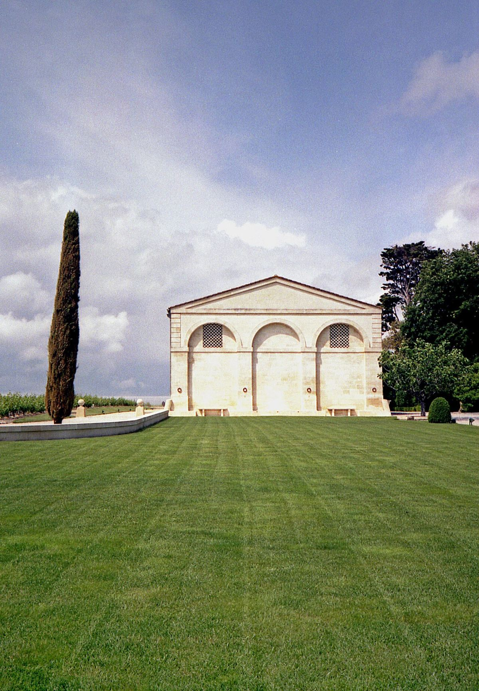

ROUGE
Maison de vins bordelaise de la famille du Château Mouton Rothschild, créatrice de Mouton Cadet, l’une des marques de Bordeaux les plus diffusées.

Baron Philippe de Rothschild est la maison de vins bâtie autour du baron Philippe de Rothschild (1902-1988), qui dirigea pendant plus de soixante ans le Château Mouton Rothschild, à Pauillac. Philippe fut un innovateur : il instaura la mise en bouteilles au château dans les années 1920 et, à partir de 1945, confia à des artistes l’illustration des étiquettes de Mouton. En 1973, Mouton Rothschild fut promu premier grand cru classé, seule modification apportée au classement de 1855 dans cette catégorie.
Dans les années 1930, le baron créa Mouton Cadet, un vin d’appellation Bordeaux issu de raisins de différents secteurs de la région, qui devint avec le temps l’une des marques de Bordeaux les plus vendues au monde. La gamme compte aujourd’hui un rouge, un blanc et un rosé, entre autres références.
Après la mort de Philippe, la maison fut dirigée par sa fille, la baronne Philippine de Rothschild, puis par ses descendants. Le groupe participe aussi à des projets hors de France, comme Opus One en Californie, créé avec Robert Mondavi, et Almaviva au Chili.
Mouton Cadet propose un style de Bordeaux accessible et fruité, pensé pour être apprécié jeune.
La maison a son siège à Pauillac, dans le Médoc, à proximité des propriétés de la famille.